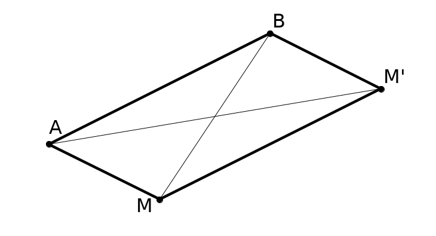
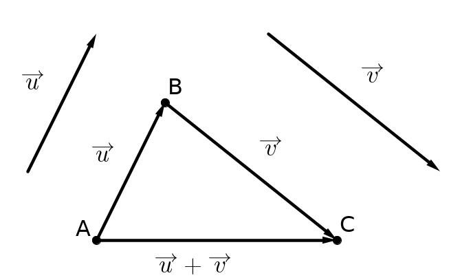
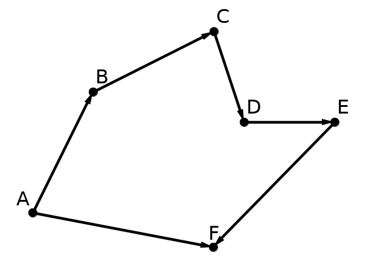
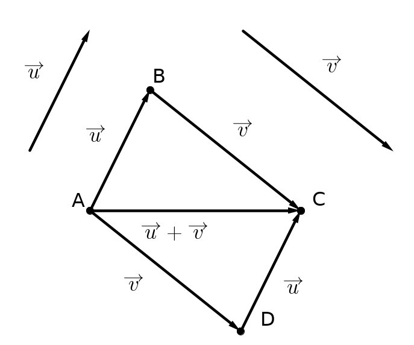
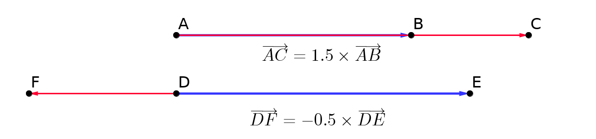
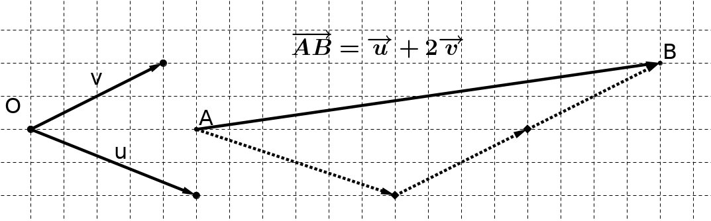

Vecteurs (1re partie)
1 Définitions
Translation
Soient A et B deux points du plan.
La translation qui transforme A en B associe à chaque point M du plan l’unique point M' tel que ABM'M est un parallélogramme.

Vecteur
On dit alors que les points A et B (pris dans cet ordre) et que les points M et M' (pris dans cet ordre) représentent le même vecteur \overrightarrow{u}. On note:
\overrightarrow{u}=\overrightarrow{AB}=\overrightarrow{MM'}
Finalement, un vecteur \overrightarrow{AB} est caractérisé par:
sa direction: celle de la droite (AB);
son sens : celui de A vers B ;
sa norme, notée ||\overrightarrow{AB}|| : la longueur AB.
En suivant les mêmes notations de l’illustration précédente, on dira que M' est l’image de M par la translation de vecteur \overrightarrow{AB}
2 Égalité de deux vecteurs
Deux vecteurs \overrightarrow{AB} et \overrightarrow{CD} sont égaux lorsque D est l’image de C par la translation de vecteur \overrightarrow{AB}. Cela signifie que:
\overrightarrow{AB} et \overrightarrow{CD} ont la même direction, le même sens et la même norme.
Le quadrilatère ABDC est un parallélogramme.
L’égalité AB=CD (égalité de longueur) ne suffit pas pour avoir \overrightarrow{AB}=\overrightarrow{CD}.
Que dire du vecteur \overrightarrow{AA} ou \overrightarrow{BB}?
C’est le vecteur nul, noté \overrightarrow{0}. Il n’a pas de direction (donc pas de sens) et sa longueur est nulle.
Que dire des vecteurs \overrightarrow{AB} et \overrightarrow{BA}?
Ils ont même direction, même norme et des sens contraires. On dit qu’ils sont opposés et on note \overrightarrow{BA}=-\overrightarrow{AB}
Un vecteur peut exister sans qu’on lui associe de point particulier. Dans ce cas on le note avec une lettre minuscule surmontée d’une flèche. Par exemple, le vecteur \overrightarrow{u}.
Si \overrightarrow{AB}=\overrightarrow{u} on dit que \overrightarrow{AB} est un représentant de \overrightarrow{u} d’origine A.
3 Somme de deux vecteurs
La somme de deux vecteurs \overrightarrow{u} et \overrightarrow{v} est le vecteur \overrightarrow{s} résultant de l’enchaînement de la translation de vecteur \overrightarrow{u} suivie de la translation de vecteur \overrightarrow{v}.
On note:
\overrightarrow{s}=\overrightarrow{u}+\overrightarrow{v}

Si l’image de A par la translation de vecteur \overrightarrow{u} est B, et si l’image de B par la translation de vecteur \overrightarrow{v} est C, alors C est l’image de A par la translation de vecteur \overrightarrow{s}=\overrightarrow{u}+\overrightarrow{v}.
Relation de Chasles
Soient A, B et C trois points du plan. On a alors:
\overrightarrow{AB}+\overrightarrow{BC}=\overrightarrow{AC}
La relation de Chasles peut s’étendre à plus de deux points
Ci-contre, on a l’égalité:
\overrightarrow{AF}=\overrightarrow{AB}+\overrightarrow{BC}+\overrightarrow{CD}+\overrightarrow{DE}+\overrightarrow{EF}

Soient A, B et D trois points tels que \overrightarrow{AB}=\overrightarrow{u} et \overrightarrow{AD}=\overrightarrow{v}.
Le point C tel que \overrightarrow{AC}=\overrightarrow{u}+\overrightarrow{v} est le quatrième sommet du parallélogramme ABCD.
La première propriété permet de construire la somme de deux vecteurs en les mettant “bout-à-bout”.
La deuxième propriété permet de construire la somme de deux vecteurs de même origine.

Vecteurs opposés, soustraction de deux vecteurs
On rappelle que deux vecteurs opposés ont même direction, même longueur et sens opposé. On note \overrightarrow{AB}=-\overrightarrow{BA}.
Soustraire un vecteur à un autre, c’est additionner son opposé. C’est ainsi que l’on définit une soustraction de vecteurs.
\overrightarrow{u}-\overrightarrow{v}=\overrightarrow{u}+(-\overrightarrow{v})
4 Multiplication d’un vecteur par un réel
Soient A et B deux points distincts du plan et k un nombre réel non nul.
Si \overrightarrow{AC}=k\overrightarrow{AB}, alors C est le point de la droite (AB) tel que:
Si k>0, AC=k\times AB et les points B et C sont du même côté de A.
Si k<0, AC=(-k)\times AB et les points B et C sont de part et d’autre de A.

Autrement dit:
Si k>0, alors \overrightarrow{AB} et \overrightarrow{AC} ont même direction, même sens et AC=k \times AB
Si k<0, alors \overrightarrow{AB} et \overrightarrow{AC} ont même direction, sens opposés et AC=(-k)\times AB.
Par convention, 0\overrightarrow{u}=\overrightarrow{0} et k\overrightarrow{0}=\overrightarrow{0}
On a ainsi k\overrightarrow{u}=\overrightarrow{0} ssi k=0 ou \overrightarrow{u}=\overrightarrow{0}
Milieu d’un segment
Soit M le milieu du segment [AB]. Cela signifie (par exemple) que :
\overrightarrow{AM}=\overrightarrow{MB}
\overrightarrow{AB}=2\overrightarrow{AM}=2\overrightarrow{MB}
\overrightarrow{AM}=\dfrac{1}{2}\overrightarrow{AB}
5 Vecteurs colinéaires
Deux vecteurs sont dits colinéaires lorsqu’ils ont la même direction.
Cela signifie que les vecteurs \overrightarrow{AB} et \overrightarrow{CD} sont colinéaires lorsque les droites (AB) et (CD) sont parallèles.
On peut également définir la colinéarité de deux vecteurs en utilisant la multiplication par un réel:
deux vecteurs non nuls \overrightarrow{u} et \overrightarrow{v} sont dits colinéaires si l’un d’eux est le produit de l’autre par un réel. C’est-à-dire qu’il existe un réel k tel que \overrightarrow{u}=k\overrightarrow{v}.
Parallélisme et alignement
(AB)\parallel (CD) si et seulement s’il existe un réel k tel que \overrightarrow{AB}=k\overrightarrow{CD} (c’est-à-dire ssi \overrightarrow{AB} et \overrightarrow{CD} sont colinéaires).
Les points A,B et C sont alignés si et seulement s’il existe un réel k tel que \overrightarrow{AB}=k\overrightarrow{AC} (c’est-à-dire ssi \overrightarrow{AB} et \overrightarrow{AC} sont colinéaires).
6 Repères vectoriels
À l’aide d’un point et de deux vecteurs (\overrightarrow{u} et \overrightarrow{v} par exemple) non colinéaires, il est possible de définir un repère. Ce repère permet d’exprimer n’importe quel vecteur du plan à l’aide des vecteurs \overrightarrow{u} et \overrightarrow{v}.

Soit un repère (O;\overrightarrow{i},\overrightarrow{j})
(O;\overrightarrow{i},\overrightarrow{j}) est un repère orthogonal lorsque les directions des vecteurs \overrightarrow{i} et \overrightarrow{j} sont orthogonales (perpendiculaires).
(O;\overrightarrow{i},\overrightarrow{j}) est un repère orthonormé lorsque les directions des vecteurs \overrightarrow{i} et \overrightarrow{j} sont orthogonales et que leurs normes sont égales à 1 : ||\overrightarrow{i}||=||\overrightarrow{j}||=1.